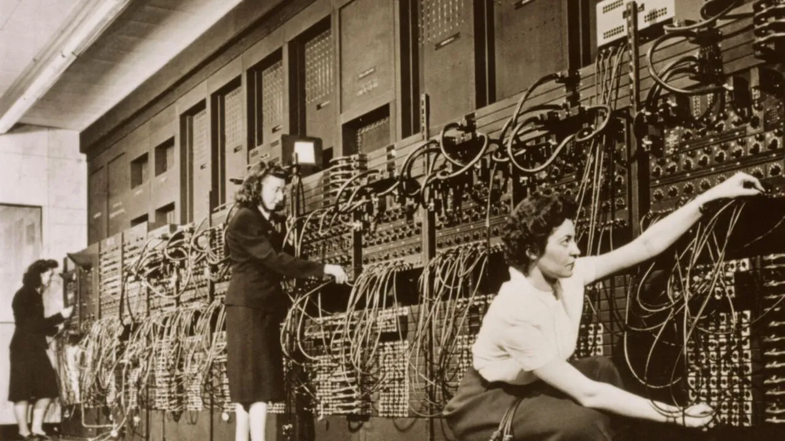
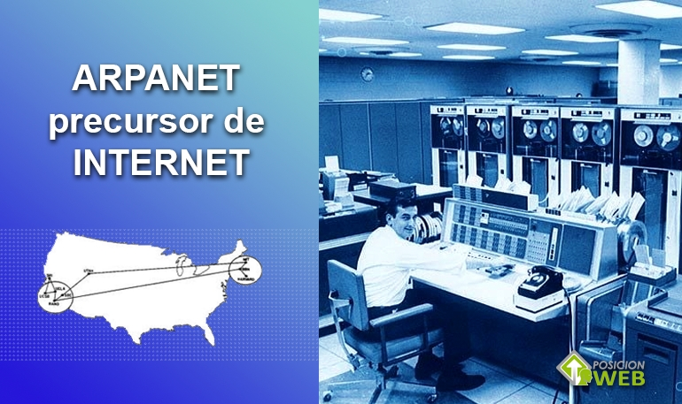

Abaco
El ábaco fue uno de los primeros instrumentos utilizados para realizar cálculos. Se utilizaba hace miles de años y permitió realizar operaciones matemáticas de manera más rápida.
Pasculina

En el siglo XVII, Blaise Pascal creó la Pascalina, una máquina mecánica capaz de realizar sumas y restas. Fue uno de los primeros dispositivos de cálculo automático.
MÁQUINAS DE BABBAGE

Charles Babbage diseñó máquinas mecánicas capaces de realizar cálculos automáticamente. Su Máquina Analítica es considerada un antecedente de las computadoras modernas.
ENIAC

Internet comenzó como una red destinada a conectar computadoras. Con el tiempo se convirtió en una herramienta fundamental para la comunicación, la educación y el acceso a la información.
INTERNET

Internet comenzó como una red destinada a conectar computadoras. Con el tiempo se convirtió en una herramienta fundamental para la comunicación, la educación y el acceso a la información.
INFORMÁTICA ACTUAL
Actualmente, la informática está presente en prácticamente todos los ámbitos. Las computadoras, los teléfonos inteligentes, la inteligencia artificial y la robótica forman parte de nuestra vida cotidiana.